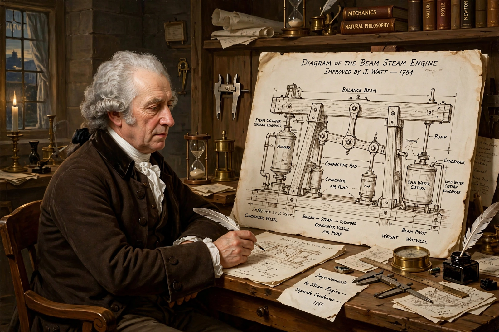

James Watt

| Born | 19 January 1736, Greenock, Scotland |
|---|---|
| Died | 25 August 1819, Handsworth, England |
| Occupation | Inventor, mechanical engineer |
| Known for | Improved steam engine; separate condenser |
| Partner | Matthew Boulton (Boulton & Watt) |
James Watt (1736–1819) was a Scottish inventor, mechanical engineer and chemist whose improvements to the steam engine were fundamental to the changes brought by the Industrial Revolution in Britain and the world.
Early life
Watt was born in Greenock, on the Firth of Clyde, and trained as a maker of mathematical instruments, working for the University of Glasgow. In 1763–64 he was asked to repair a model Newcomen steam engine belonging to the university. Watt recognised that the design wasted enormous amounts of steam — and thus fuel — because the cylinder was repeatedly reheated and cooled in each cycle.
The separate condenser
In 1765 Watt conceived his key invention: a separate condenser, in which steam is condensed in a chamber kept permanently cool while the cylinder itself stays hot. This made the engine far more fuel-efficient. Watt patented the idea in 1769 and in 1775 entered partnership with Birmingham manufacturer Matthew Boulton; an Act of Parliament extended Watt's patent until 1800. The firm Boulton & Watt supplied engines to mines, mills, breweries and waterworks across Britain.
Further inventions
Watt added a series of refinements that turned the pumping engine into a general source of rotary power for factories: the sun-and-planet gear, the double-acting engine, the parallel motion linkage (which he called one of his most ingenious inventions), a centrifugal governor, and the steam indicator. To market his engines he popularised the unit "horsepower", comparing engine output to the work of brewery horses; royalties were charged as a fraction of the fuel savings.
Legacy
Watt was a member of the Lunar Society of Birmingham and a Fellow of the Royal Society. The SI unit of power, the watt, is named in his honour. His workshop, preserved at the Science Museum in London, is regarded as the world's oldest complete engineering workshop display.
See also: Steam engine, Assembly line.